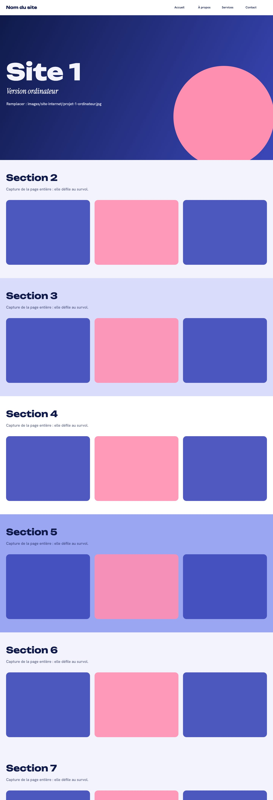
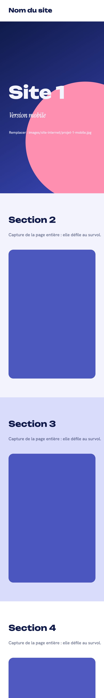

01
Université Jules Verne
Pendant mon stage, j’ai été chargée de mettre à jour le site de l’Université Jules Verne pour annoncer sa nouvelle édition. Je n’ai donc pas créé le site de A à Z, mais je l’ai fait évoluer en y intégrant de nouveaux contenus et en changeant parfois la mise en page. Ce projet m’a aussi permis d’approfondir ma maîtrise de WordPress en découvrant de nouvelles fonctionnalités.
- Contexte
- MEDEF Loire-Atlantique
- Outils


